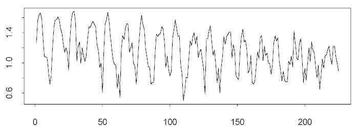

| / Home |
Keywords: time series, periodicities
Activity of individually caged fiddler crabs under constant conditions for 225 consecutive hours (225 = 9*25 = 9*24 + 8). The activity scale is log(y+1) where y is mean minutes per hour. Examination of the data suggests that the logarithm was base 10.
| Variable | Description | ||
| Activity | log(Minutes per hour+1) | ||
Data File (tab-delimited text)
| Bliss, C. I. (1970). Statistics in Biology, V II. McGraw Hill. Table 17.17, page 258. |
Data contributed by Kit Bingham, University of Minnesota.
There is a bimodal pattern corresponding to the bimodal tidal rhythm.

|
Home - About Us -
Contact Us Copyright © Gordon Smyth |